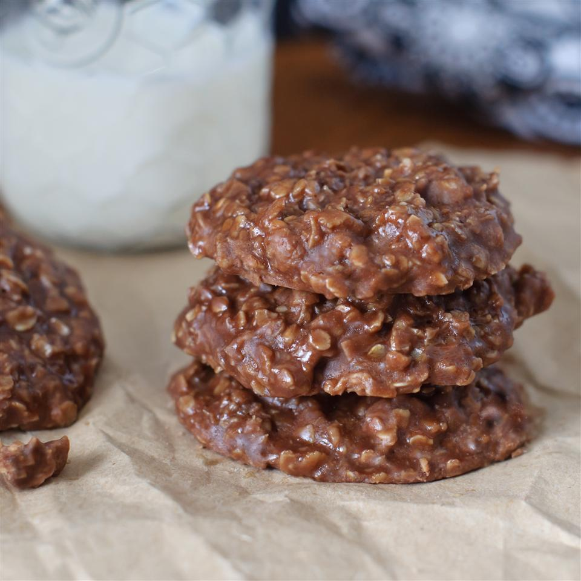

No Bake Cookie Recipe

Description
This is a quick and easy recipe that delivers in the peanut butter taste department. If you don't have a lot of time on your hands, but develop a sweet tooth, you've come to the right place.
Ingredients
- 1 stick butter
- 1 cup sugar
- 2 tablespoons cocoa powder (optional)
- 1/2 cup milk
- 1/2 cup peanut butter
- 1 teaspoon vanilla
- 2 1/2 cups quick oats
- nuts and/or raisins (optional)
Steps